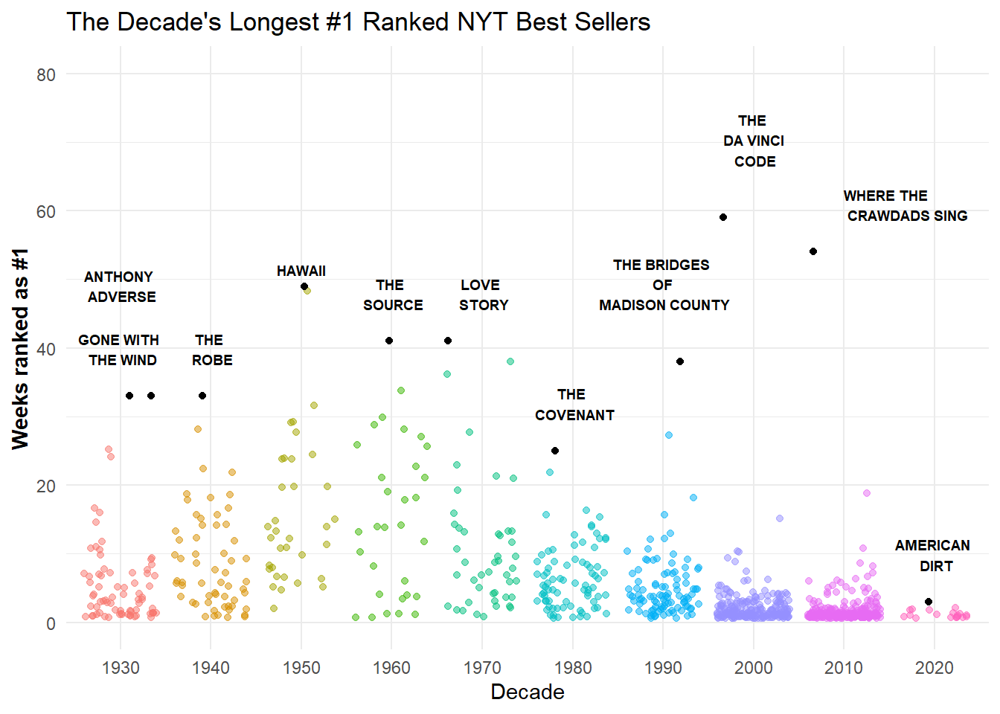

The New York times has ranked many books in the past century. Here I have analysed which books were ranked #1 for the longest time, and which authors had the most NYT best sellers.
nyt_full <- readr::read_tsv('https://raw.githubusercontent.com/rfordatascience/tidytuesday/master/data/2022/2022-05-10/nyt_full.tsv')nyt_titles <- readr::read_tsv('https://raw.githubusercontent.com/rfordatascience/tidytuesday/master/data/2022/2022-05-10/nyt_titles.tsv')rank_1=nyt_full %>%filter(rank==1) %>%group_by(title,title_id) %>%count()book_year=nyt_titles %>%summarize(year,author,id)rank_1=left_join(rank_1,book_year, by=c('title_id'='id')) %>%mutate(decade =cut(year, breaks=c(1930,1940,1950,1960,1970,1980,1990,2000,2010,2020,2030),labels =c("1930", "1940","1950","1960","1970","1980","1990","2000","2010","2020"), right=FALSE)) %>%arrange(desc(n),desc(decade))rank_2=rank_1 %>%filter(title_id!=481,title_id!=2026,title_id!=6157,title_id!=2126,title_id!=6366,title_id!=2816,title_id!=4897,title_id!=4723,title_id!=4918,title_id!=7239,title_id!=414)#For each decade I want all books, but want to highlight the books that were ranked number 1 the longest. bin the decadestop_ranked=rank_1 %>%group_by(decade) %>%top_n(1,n) %>%arrange(decade)rank_3=nyt_full %>%group_by(author) %>%distinct(title) %>%filter(author!="James Patterson and Maxine Paetro") %>%count() %>%filter(n>36)
Analysis
Of the Novels ranked by the NYT, Dan Brown’s “The Davinci Code, ranked at #1 the longest for 59 weeks. Followed by Delia Owen’s Where the Crawdads Sing at 54 weeks, and James A. Michener’s Hawaii at 49 weeks.
Show the code
rank_2 %>%ggplot(aes(x=decade,y=n,color=decade))+geom_jitter(alpha=0.5)+geom_jitter(data=top_ranked, inherit.aes = T, aes( x=decade, y= n),color="black", height =0)+theme_minimal()+scale_y_continuous(limits =c(0,80))+labs(title ="The Decade's Longest #1 Ranked NYT Best Sellers", x="Decade",y="Weeks ranked as #1")+annotate("text", x = top_ranked$decade[1], y = top_ranked$n[1], label ="ANTHONY \n ADVERSE", vjust =-3, fontface ="bold", size=2.5) +annotate("text", x = top_ranked$decade[2], y = top_ranked$n[2], label ="GONE WITH \n THE WIND", vjust =-1, fontface ="bold", size=2.5)+annotate("text", x = top_ranked$decade[3], y = top_ranked$n[3], label ="THE \n ROBE", vjust =-1, fontface ="bold", size=2.5)+annotate("text", x = top_ranked$decade[4], y = top_ranked$n[4], label = top_ranked$title[4], vjust =-1, fontface ="bold", size=2.5)+annotate("text", x = top_ranked$decade[5], y = top_ranked$n[5], label ="THE \n SOURCE", vjust =-1, fontface ="bold", size=2.5)+annotate("text", x = top_ranked$decade[6], y = top_ranked$n[6], label ="LOVE \n STORY", vjust =-1, fontface ="bold", size=2.5)+annotate("text", x = top_ranked$decade[7], y = top_ranked$n[7], label ="THE \n COVENANT", vjust =-1, fontface ="bold", size=2.5)+annotate("text", x = top_ranked$decade[8], y = top_ranked$n[8], label ="THE BRIDGES \n OF \n MADISON COUNTY", vjust =-1, fontface ="bold", size=2.5)+annotate("text", x = top_ranked$decade[9], y = top_ranked$n[9], label ="THE \n DA VINCI \n CODE", vjust =-1, fontface ="bold", size=2.5)+annotate("text", x = top_ranked$decade[10], y = top_ranked$n[10], label ="WHERE THE \n CRAWDADS SING",vjust =-1,hjust=0, fontface ="bold", size=2.5)+annotate("text", x = top_ranked$decade[11], y = top_ranked$n[11], label ="AMERICAN \n DIRT", vjust =-1, fontface ="bold", size=2.5)+theme(plot.title =element_text(vjust =1), plot.subtitle =element_text(vjust =2), axis.title.y =element_text(face ="bold")) +theme(legend.position ="none")

Among the many authors on the list, Danielle steele has the most #1 best sellers at 116 books. Followed by Stuart Woods with 63, and Stephen King with 54.
Show the code
ggplot(rank_3,aes(x=reorder(author,n), y=n, fill=author))+geom_bar(stat ='identity')+theme_minimal()+coord_flip()+labs(title ="Authors with the most NYT Best Sellers", x="Authors", y='Books')+theme(plot.title =element_text(vjust =1), plot.subtitle =element_text(vjust =2), axis.title.y =element_text(face ="bold")) +theme(legend.position ="none")